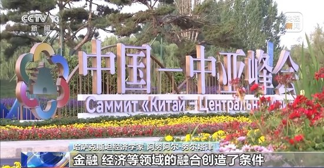

新浪政务 > 正文
新浪政务 > 正文
焦点説访谈：中国底气 新思想夯实大国粮仓
2023年03月02日 21:50 央视网
央视网消息投身职业教育十余载，杨洋始终坚持“先为人师，后为经师”的教育理念。她成功打造“把课堂搬到工厂车间”的工学结合模式，实现了学生技能与市场需求的“无缝对接”。 她构建校企“五元融合”人才培养体系，创新推出“探究-解析-‘示范+练兵+纠错’-比武-复盘-拓展”六步教学流程，为锻造能工巧匠、大国工匠持续赋能。 她常年带领师生深入企业一线跟岗实践，探索深化产教融合、推动科教融汇的育人新路径，累计培养输送3500余名高素质技术技能人才。
展望前路，杨洋将继续在职业教育的沃土上精耕细作，照亮更多青年技能报国的梦想，为赋能产业升级、服务国家战略贡献无悔的职教力量。
中国中亚经贸合作逆势前行，贸易额突破千亿，彰显了中国中亚合作的蓬勃发展势头，也印证了中国—中亚机制的引领推动作用。 2020年，在中方倡导下，中国同中亚五国共同创立了中国—中亚机制。2023年，中国—中亚机制升级至元首层级并日臻完善。为什么中国中亚合作能够不断取得新突破？ 在全球大国纷纷同中亚国家建立对话机制背景下，中国—中亚机制为何能够脱颖而出，得到广泛认可和支持？一起来看记者观察。
中国—中亚贸易畅通合作平台机制工作组成员 武琼玉：自平台成立以来，20多家中亚机构来到中国入驻平台，比如哈萨克斯坦贸易政策发展中心，他们收集哈萨克斯坦数百家企业的销售需求后，由我们来帮助他们定向对接。 在线上，我们面向中亚打造“丝路电商平台”，吸引了500多家国内企业入驻，并为这些企业对接中亚本土电商平台。
责任编辑：王树淼 SN242